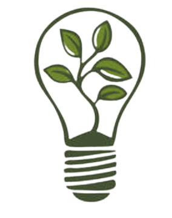
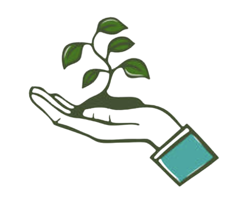
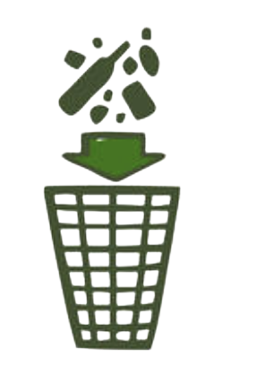

Make sure to provide the scanner with several angles of the article of trash.

Please allow the scanner to calibrate for 15-20 seconds.
Recyclable items are materials that can be reused to make new products after they are no longer needed. This includes items like paper, cardboard, plastic bottles, metal cans, and glass containers. To determine what is recyclable in your area, check with your local recycling program or waste management service.Click the Start button below to scan your item through the camera and determine the proper disposal method!